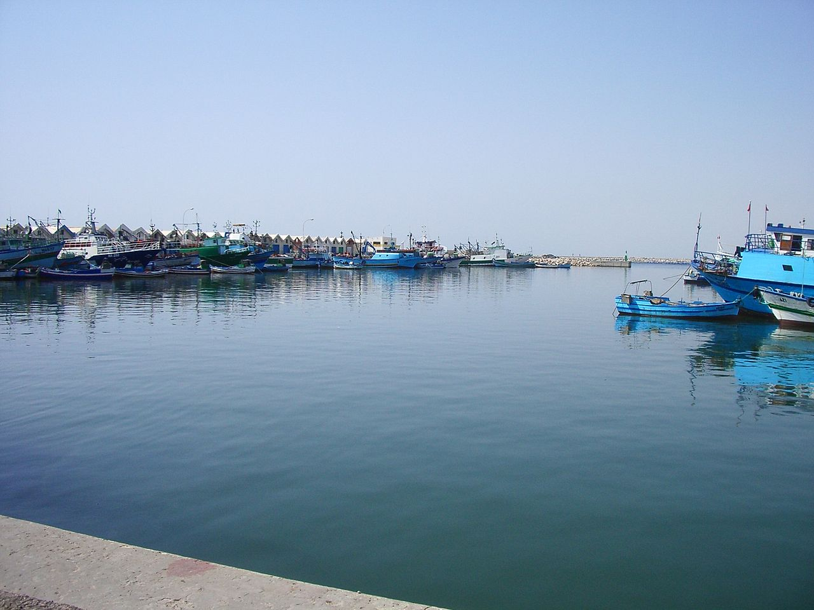
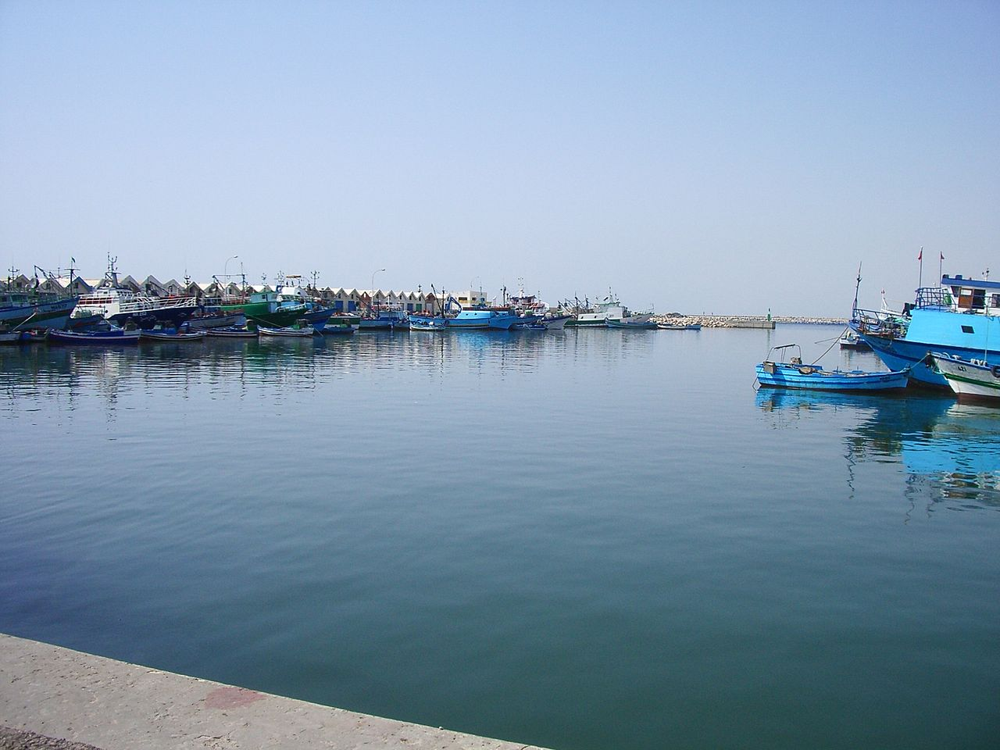

Mahdia est une ville côtière tunisienne située au centre-est du pays, à environ 200 kilomètres au sud de la capitale Tunis. Chef-lieu du gouvernorat du même nom, elle constitue une municipalité comptant 51 833 habitants en 2014. Construite à l'origine sur une presqu'île de 1 400 mètres de longueur sur 500 mètres de largeur, elle abrite l'un des premiers ports de pêche du pays.

L'année 916 voit l'arrivée du premier calife fatimide Ubayd Allah al-Mahdi qui ordonne la fondation de Mahdia, dont la construction s'étale sur cinq ans, et qui lui donne son nom actuel. La ville devient ainsi la capitale des Fatimides en 921 et le reste jusqu'en 973, date à laquelle Mahdia est remplacée par Le Caire. Assiégée durant huit mois (944-945) par les kharidjites sous la conduite de leur chef Abu Yazid, la ville résiste victorieusement. En 1057, les Zirides s'y réfugient face à la menace des Hilaliens.

Le port de pêche est très animé à certaines heures, et possède ses propres conserveries conditionnant le poisson bleu. On peut y admirer des chalutiers équipés pour la pêche au lamparo (nocturne). La ville située à l'est d'une grande oliveraie abrite des huileries permettant de produire de l'huile d'olive mais aussi du savon. La ville est aussi connue pour ses tissages (soie et laine) et son artisanat (bijoux, cuir, bois, etc.). Un village de l'artisanat, voué à la formation des artisans de la région et à la commercialisation de leurs produits, est inauguré en 2019


 
